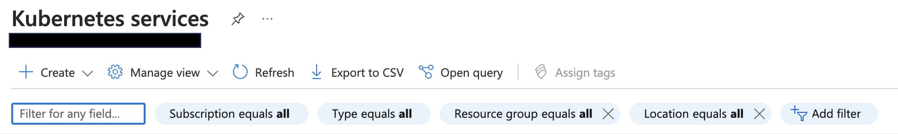
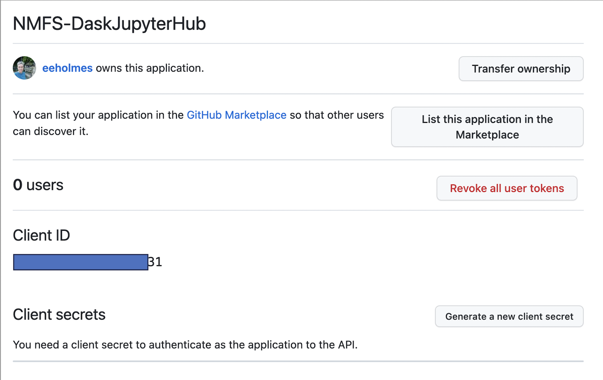

JHub Set-up on Azure
Second time setting up a multi-user JupyterHub with Dask enabled
Requirements
- Documentation: https://z2jh.jupyter.org
See full config.yaml files in the config-template directory in the nmfs-opensci/nmfs-jhub GitHub repo. Name of config file is fish-config.yaml.
- Domain Name: You will need one. I use Godaddy. They are cheap.
Steps
- Open the Azure Cloud Shell
- Create a Kubernetes cluster
- Create the node pools (what types of VMs)
- Install JupyterHub with Dask
- Edit the config file
- Set up https
- Set up authentication
- Once it is working, you can create user shared drive
Open the Azure Cloud Shell
I am using a simpler version of the instructions here: Z2JH Set up Kubernetes on Azure. To see how to do these steps using the Azure Dashboard go to the DaskHub Set-up on Azure. If this is your first time setting up a hub on Azure, it would be good to skim that post to get an overview of the process.
Log into
https:\\portal.azure.comLook for the Cloud Shell icon in the top nav bar. Box with a right pointing arrow in it. Click on that and use bash shell not the Power Shell.
Make sure to set up a storage account. You can just have Azure set one up for you. If you forget and later get warnings that your shell is ephemeral, then go into settings in the cloud shell and reset the user settings.
Create your Kubernetes cluster
We have to create a resource group.
# Create names
RES_GP="SAFSJHub"
CLUSTER_NAME="jhub"
# Create a resource group
az group create \
--name=$RES_GP \
--location=westus2 \
--output tableThen we create a cluster with az aks create. I am going to accept most of the defaults. This will create our cluster and create the first node pool which just runs the hub (not the user VMs). This node (VM) must always be running and there is only ever one (so no autoscaling).
# Create the cluster
az aks create \
--name $CLUSTER_NAME \
--resource-group $RES_GP \
--node-vm-size Standard_D2s_v3 \
--generate-ssh-keys \
--node-count 1 \
--nodepool-name core \
--nodepool-labels hub.jupyter.org/node-purpose=core \
--zones 2 \
--location westus2--namename of our cluster. I made a variable called$HUB_NAME--node-vm-size Standard_D2s_v3This is a 2 CPU and 4 Gb RAM VM to run the hub itself (so not the user VMs). Costs about $80 a month.--generate-ssh-keysJust use the default generator.--node-count 1There is only ever one core node which the hub server runs alone on.--nodepool-name coreRequired. This is the name of the node pool for the hub.--nodepool-labels hub.jupyter.org/node-purpose=coreso that when you do queries re the nodes and pods, you can make sense of the output.--zones 2Probably not needed here. Only needed for user pods.--location westus2Required. Pick something close. useaz account list-locations --output tableto see a list of the options.--output tableSo that output is pretty.
Create user node pools
This will define the types of VMs that will spin up for our users. In the JHub, I am creating, the users can request a minimum amount of RAM from 2-128Gb. For normal uses, the users will select 2 or 4 Gb and 16 to 8 users will be sharing each VM. If a VM runs out of RAM, then another will be spun up. I want to create a separate node pool for 128Gb requests because that is an expensive VM and I only want that if a user requests it (it will go away after the user shuts down their server).
Before you get started, take a look at your quota. Your CPUs*max-count for all node pools should not exceed that.
What sort of machines should I put in my node pool?
- Lots of memory intensive work? Lower CPU and higher RAM (memory optimized).
- Lots of parallel processing or batch processing? Lots of CPU and lower RAM (compute optimized).
Create the 32Gb RAM w 4 CPU node pool. This is a standard base user node for JupyterHubs.
az aks nodepool add \
--cluster-name $CLUSTER_NAME \
--resource-group $RES_GP \
--name usermedium \
--enable-cluster-autoscaler \
--min-count 0 \
--max-count 4 \
--node-vm-size Standard_E4as_v5 \
--labels hub.jupyter.org/node-purpose=usermedium \
--zones 2--name usersmallgive this node pool a unique name. We will need this in our JHub config file.--enable-cluster-autoscalerRequired. We want more VMs to be spun up if more users sign into the hub.--min-count 0We want the minimum to be 0 because if there are no users, then we don’t need a user VM (node) to be running and costing money.--max-count 4This should accommodate roughly 32-64 users if most users are requesting 2-4 Gb of RAM. This is 4*8 = 32 CPU if all nodes are in use.--node-vm-size Standard_E4as_v5This is a general use VM with 32 Gb RAM and 4 CPU. Similar to AWSr5.xlarge.--labels hub.jupyter.org/node-purpose=usersmallSo that we can decipher our node and pod output.--zones 2Very important. We have to pin our user storage to a specific region and zone. We don’t want our nodes (VMs) to ever spin up in a zone different than our user (cloud) storage.
Create the 128Gb RAM/16 CPU node pool. Everything is the same except Standard_E16as_v5 and the node pool name. This is similar to AWS r5.4xlarge.
az aks nodepool add \
--cluster-name $CLUSTER_NAME \
--name userxlarge \
--resource-group $RES_GP \
--enable-cluster-autoscaler \
--min-count 0 \
--max-count 3 \
--node-vm-size Standard_E16as_v5 \
--labels hub.jupyter.org/node-purpose=userlarge \
--zones 2--node-count 2The default is 3 and it threw an error if I didn’t pass this in.
Check out what you created
Click on the Kubernetes Services button and you should see something like this

Click Kubernetes Cluster and then on the jhub cluster. Poke around on the tabs and look at the node pools.
Install DaskHub on your cluster
These next steps are done in the shell after connecting to your cluster. First you need to get to the shell for your cluster. Make sure you don’t have the ephemeral warning when you launch your cloud shell.
Connect to your cluster
Once you have created your Kubernetes cluster, you want to go to its dashboard (by clicking on the name you gave it). You’ll see something like this (in this image the cluster is named daskhub).

Click on the Connect icon to the right of “+ Create”.
You then see this

Click on the link that says “Open Cloud Shell”.

You will get to a terminal and it should automatically run those az commands.
Create config.yaml
This will be the configuration file for your JupyterHub. For now, it can be just comments. Note the name is unimportant but should end in .yaml.
nano config.yamlThis will open the nano editor. Edit your file. You can do # just blank for now. Then Cntl-O to save and Cntl-X to exit.
Install daskhub via helm chart
Instructions: https://artifacthub.io/packages/helm/dask/daskhub .
Check that helm is installed. It should be.
helm versionTell helm about the dask helm repository
helm repo add dask https://helm.dask.org
helm repo updateNow install. The first dhub is your release name and the second is the namespace name.
helm upgrade --wait --install --render-subchart-notes \
dhub dask/daskhub \
--namespace=dhub --create-namespace \
--values=config.yamlYou will see this on successful installation (it’s long. much has been cut). 
Set-up your external IP address
Set the namespace context for the Kubernetes cluster and the the external IP address.
kubectl config set-context $(kubectl config current-context) --namespace dhub
kubectl --namespace=dhub get service proxy-publicThese commands will show the the IP address. Save the public IP address. You will need it in step 2. Look for the IP address under EXTERNAL-IP.
Set up https
You can log out of your cluster. The next steps are done elsewhere.
Create a domain name
You will need a domain name for https which you want for security (and JupyterHub won’t stop complaining if you don’t). Find a domain name provider and set one up. It is not expensive. I used GoDaddy. If you already have one, you don’t need another. You create a subdomain under that.
Create a DNS entry
Let’s pretend you set up bluemountain123.live as the domain. Go to the DNS settings for your domain. Add a type A record. This will do 2 things. First this will create the subdomain that you will use to access your JupyterHub. So let’s say you create, dhub as the type A DNS entry. Then dhub.bluemountain123.live will be the url. You can have as many subdomains as you need.

Test if the url is working
http:\\dhub.bluemountain123.live would be the url using the example domain above. Test that it is working (shows a JupyterHub login) before moving on. This is what you should see:

Set-up https on your JupyterHub
Log back into your Kubernetes cluster: go to portal.azure.com, click on your Kubernetes cluster name, and then click on “Connect”. Then click on “Open Cloud Shell”. Read documentation about https
Once you are on the shell, type
nano config.yamlto edit the config file. Paste this in and save. Note the additional jupyterhub: in the yaml file. This is not in a plain JupyterHub with Kubernetes config file (i.e. in a non-daskhub, the jupyterhub: bit is not there and everything is moved to left by 2 spaces).
jupyterhub:
proxy:
https:
enabled: true
hosts:
- dhub.bluemountain123.live
letsencrypt:
contactEmail: your@email.comUpdate the JupyterHub installation
Anytime you change config.yaml you need to run this code. Find the latest version here.
helm upgrade --cleanup-on-fail --render-subchart-notes dhub dask/daskhub --namespace dhub --version=2024.1.1 --values config.yamlTest if https is working
COME BACK IN AN HOUR It takes awhile for a certificate to be issued. If it still doesn’t work, try editing the config file and re-upgrading.
Try https:\\dhub.bluemountain123.live and you should see the JupyterHub login without that http warning.
Step 3 Set up GitHub authentication
Optional, if you want to manage who can login via GitHub Team. I am going to show an example where I use a team on a GitHub organization to manage authentication. There are many other ways to manage users. Google to find that.
Create a new Oauth Application on GitHub
This is going to be associated with your (personal) GitHub account, but you can use a team on a GitHub org that you are owner of.
Log into GitHub and go to GitHub > Settings > Developer Settings > Oauth Apps > Register New Oauth Application
Look carefully at how I filled in the boxes.

Next you will see something like this

You need to copy the ID and then click the create secrets button and save the secret. Save those for later.
Create a team in your GitHub org
You will be added by default and add anyone else who needs access to the hub. Let’s say your org is MyOrg and the team is called DaskHub. So then the allowed organization is MyOrg:DaskHub. You can leave off :DaskHub if you want to allow all members of the organization to log in.
Edit the config.yaml file
nano config.yamlAdd to your config file so it is now this. Replace the id, secret and url with your values.
jupyterhub:
hub:
config:
GitHubOAuthenticator:
client_id: <replace with your OAuth id>
client_secret: <replace with your OAuth app secret>
oauth_callback_url: https://dhub.bluemountain123.live/hub/oauth_callback
allowed_organizations:
- MyOrg:DaskHub
scope:
- read:org
JupyterHub:
authenticator_class: github
KubeSpawner:
working_dir: /home/jovyan
proxy:
https:
enabled: true
hosts:
- dhub.bluemountain123.live
letsencrypt:
contactEmail: your@email.com Update the hub
helm upgrade --cleanup-on-fail --render-subchart-notes dhub dask/daskhub --namespace dhub --version=2024.1.1 --values config.yamlTest
You should now see this and can authenticate with GitHub.

Set up the container image
Now you need to specify the Docker image that will be used. Edit the config.yaml file and add the user image info. Note the spacing matters (a lot).
singleuser:
image:
name: openscapes/python
tag: f577786
cmd: null
singleuser:
# Defines the default image
image:
name: openscapes/python
tag: f577786
profileList:
- display_name: "Python3"
description: "NASA Openscapes Python image"
default: true
- display_name: "R"
description: "NASA Openscapes RStudio image"
kubespawner_override:
image: openscapes/rocker:a7596b5 Test a full config file
My config.yaml is a bit more customized to allow the user to reserve the amount of RAM that they need. Full config file: https://github.com/nmfs-opensci/nmfs-jhub/blob/main/config-template/fish-config.yaml
Cut out the part regarding the shared drive:
extraVolumes:
- name: jupyterhub-shared
persistentVolumeClaim:
claimName: daskhub-pvc
extraVolumeMounts:
- name: jupyterhub-shared
mountPath: /home/jovyan/sharedAnd make sure the hub is working nicely before adding a shared drive. The shared drive part tends to break things.
Final config.yaml
My config.yaml is a bit more customized to allow the user to reserve the amount of RAM that they need.
Full config file: https://github.com/nmfs-opensci/nmfs-jhub/blob/main/config-template/fish-config.yaml